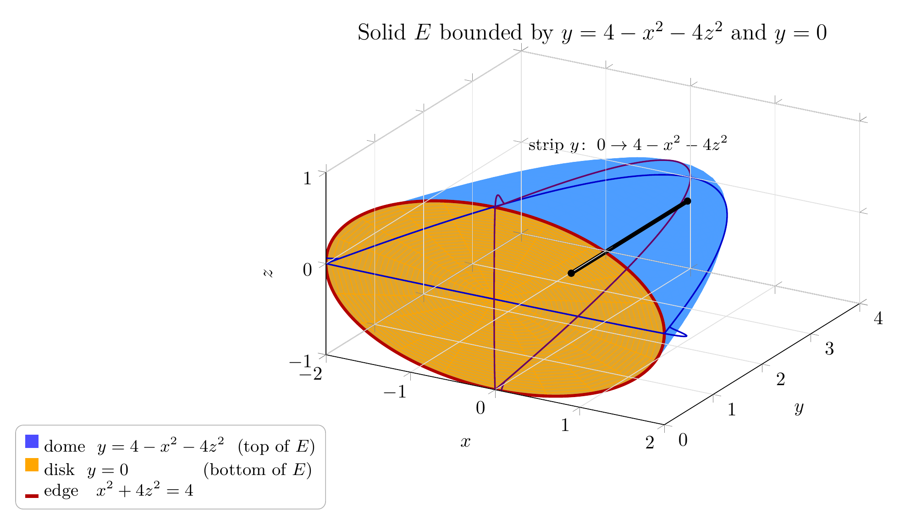

Please solve the problem in the following image.
(Image `20260927_234819_075583_utc_0800_0.png`. Alt text: Image: human_20260927_234819_075583_utc_0800)
20260927_234819_075583_utc_0800_0.png
\documentclass[border=8pt]{standalone}
\usepackage{pgfplots}
\pgfplotsset{compat=1.18}
\begin{document}
\begin{tikzpicture}
\begin{axis}[
width = 11.5cm, height = 8.5cm, axis equal image,
xlabel = $x$, ylabel = $y$, zlabel = $z$,
xmin = -2, xmax = 2, ymin = 0, ymax = 4, zmin = -1, zmax = 1,
view = {30}{21},
grid = major, grid style = {gray!25, line width=.4pt},
axis on top, samples = 33, samples y = 21,
domain = 0:1, y domain = 0:360, tick align=outside
]
% 1) paraboloid y = 4 - x^2 - 4z^2 (parametrised by x = 2r cos t, z = r sin t)
\addplot3[surf, shader=flat, opacity=.95, blue!55!cyan!70!white, draw=none]
({2*x*cos(y)}, {4-4*x*x}, {x*sin(y)});
% 2) flat part of the plane y = 0 over the ellipse x^2 + 4z^2 <= 4
\addplot3[surf, shader=flat, opacity=.80, orange!70!yellow, draw=none]
({2*x*cos(y)}, {0}, {x*sin(y)});
% 3) common edge: ellipse x^2 + 4z^2 = 4 in the plane y = 0
\addplot3[red!70!black, ultra thick, domain=0:360, samples=181, smooth]
({2*cos(x)}, {0}, {sin(x)});
% 4) the two generating parabolas lying on the dome
\addplot3[blue!80!black, thick, domain=-2:2, samples=81, smooth]
({x}, {4-x^2}, {0});
\addplot3[violet!80!black, thick, domain=-1:1, samples=81, smooth]
({0}, {4-4*x^2}, {x});
% 5) typical strip parallel to the y-axis : y runs from 0 up to 4 - x^2 - 4z^2
\addplot3[black, line width=2.2pt, domain=0:2.38, samples=2]
({0.9}, {x}, {0.45});
\addplot3[only marks, mark=*, mark size=1.7pt, black]
coordinates {(.9,0,.45) (.9,2.38,.45)};
\node[font=\small, text=black] at (axis cs:1.0,1.0,1.55) {strip $y\!:\ 0\to 4-x^2-4z^2$};
\end{axis}
\node[above, font=\large] at (current axis.north)
{Solid $E$ bounded by $y=4-x^2-4z^2$ and $y=0$};
\node[anchor=north east, align=left, draw=gray!60, fill=white, rounded corners,
inner sep=5pt, font=\small] at (current axis.south west)
{{\color{blue!70!white}\rule[2pt]{7pt}{7pt}}\ dome \ $y=4-x^2-4z^2$ \ (top of $E$)\\
{\color{orange!70!yellow}\rule[2pt]{7pt}{7pt}}\ disk \ $y=0$ \qquad\qquad (bottom of $E$)\\
{\color{red!70!black}\rule[-1pt]{7pt}{2pt}}\ edge \ \ $x^2+4z^2=4$};
\end{tikzpicture}
\end{document}

pgfplots_0.png
---
## Problem
Express $\displaystyle\int\!\int\!\int_E f(x,y,z)\,dV$ as an iterated integral in **six different ways**, where $E$ is the solid bounded by
$$
y = 4 - x^2 - 4z^2, \qquad y = 0 .
$$
---
# Step 1 — Understand the solid
**The two bounding surfaces.**
* $y = 4 - x^2 - 4z^2$ is an **elliptic paraboloid** whose axis is the $y$‑axis; it opens in the $-y$ direction and has vertex at $(0,4,0)$.
* $y = 0$ is the $xz$‑plane.
So $E$ lies **between** them:
$$
E = \bigl\{(x,y,z):\ (x,z)\in D_{xz},\quad 0 \le y \le 4-x^2-4z^2 \bigr\} .
$$
**Where do the surfaces meet?** Setting $4-x^2-4z^2 = 0$ gives
$$
x^2 + 4z^2 = 4 \quad\Longleftrightarrow\quad \frac{x^2}{4} + \frac{z^2}{1} = 1 ,
$$
an **ellipse** in the plane $y=0$, with semi‑axis $2$ along $x$ and $1$ along $z$. Inside it the height $4-x^2-4z^2$ is positive; outside it the “top’’ drops below $y=0$ and contributes nothing. Hence
$$
D_{xz} = \bigl\{(x,z):\ x^2+4z^2 \le 4 \bigr\}, \qquad 0\le y \le 4-x^2-4z^2 .
$$
The figure shows the dome (blue), the flat elliptical disk on $y=0$ (yellow), their common edge (red), and one typical segment parallel to the $y$‑axis (black).
---
# Step 2 — The three shadows, and how to slice each one
There are $3! = 6$ possible orders of integration. Each one comes from
1. projecting $E$ onto the coordinate plane of the **two outer** variables (its “shadow”), and
2. slicing that 2‑D shadow in one of two ways.
**Shadows** (project along the remaining axis, keeping the extreme cross‑section):
| shadow | how to get it | result |
|---|---|---|
| $D_{xz}$ (along $y$) | set $y=0$ in $y=4-x^2-4z^2$ | $x^2+4z^2\le 4$ (ellipse) |
| $D_{xy}$ (along $z$) | widest section is at $z=0$ | $0\le y\le 4-x^2$ |
| $D_{yz}$ (along $x$) | widest section is at $x=0$ | $0\le y\le 4-4z^2$ |
**Solve each variable out of the surface** (needed when that variable is innermost):
$$
y = 4-x^2-4z^2,\qquad
x = \pm\sqrt{4-y-4z^2},\qquad
z = \pm\tfrac12\sqrt{4-x^2-y} .
$$
**Slice each shadow two ways** (vertical = blue, horizontal = red):
* $D_{xz}$: fix $x\Rightarrow z=\pm\tfrac12\sqrt{4-x^2},\;-2\le x\le 2$ | fix $z\Rightarrow x=\pm 2\sqrt{1-z^2},\;-1\le z\le 1$
* $D_{xy}$: fix $x\Rightarrow 0\le y\le 4-x^2,\;-2\le x\le 2$ | fix $y\Rightarrow x=\pm\sqrt{4-y},\;0\le y\le 4$
* $D_{yz}$: fix $z\Rightarrow 0\le y\le 4-4z^2,\;-1\le z\le 1$ | fix $y\Rightarrow z=\pm\tfrac12\sqrt{4-y},\;0\le y\le 4$
That is $3\times 2 = 6$ descriptions — exactly the six requested iterated integrals.
**Mnemonic:** the *innermost* differential is the direction you projected along:
$$
\text{inner } dy \Leftarrow D_{xz},\qquad
\text{inner } dz \Leftarrow D_{xy},\qquad
\text{inner } dx \Leftarrow D_{yz} .
$$
---
pgfplots_1.png
---
# Step 3 — The six iterated integrals
### Group A — $y$ innermost (shadow $D_{xz}$, the ellipse)
Along a strip parallel to the $y$‑axis, $y$ runs from the plane $y=0$ **up to** the dome $y=4-x^2-4z^2$.
**(1) Order $dy\,dz\,dx$** — slice $D_{xz}$ vertically (fix $x$, $-2\le x\le 2$):
$$
\int\!\int\!\int_E f\,dV =
\int_{-2}^{2}\!\int_{-\frac{1}{2}\sqrt{4-x^2}}^{\;\frac{1}{2}\sqrt{4-x^2}}\!\int_{0}^{\,4-x^2-4z^2}
f(x,y,z)\;dy\,dz\,dx
$$
**(2) Order $dy\,dx\,dz$** — slice $D_{xz}$ horizontally (fix $z$, $-1\le z\le 1$); here $x^2+4z^2\le4\Rightarrow x=\pm2\sqrt{1-z^2}$:
$$
\int\!\int\!\int_E f\,dV =
\int_{-1}^{1}\!\int_{-2\sqrt{1-z^2}}^{\;2\sqrt{1-z^2}}\!\int_{0}^{\,4-x^2-4z^2}
f(x,y,z)\;dy\,dx\,dz
$$
### Group B — $z$ innermost (shadow $D_{xy}$, the parabola $y=4-x^2$)
Now $z$ runs between the two halves of the dome: $4z^2 = 4-x^2-y\ \Rightarrow\ z=\pm\tfrac12\sqrt{4-x^2-y}$.
**(3) Order $dz\,dy\,dx$** — slice $D_{xy}$ vertically (fix $x$, $-2\le x\le 2$, then $0\le y\le4-x^2$):
$$
\int\!\int\!\int_E f\,dV =
\int_{-2}^{2}\!\int_{0}^{\,4-x^2}\!\int_{-\frac{1}{2}\sqrt{4-x^2-y}}^{\;\frac{1}{2}\sqrt{4-x^2-y}}
f(x,y,z)\;dz\,dy\,dx
$$
**(4) Order $dz\,dx\,dy$** — slice $D_{xy}$ horizontally (fix $y$, $0\le y\le 4$, then $x=\pm\sqrt{4-y}$):
$$
\int\!\int\!\int_E f\,dV =
\int_{0}^{4}\!\int_{-\sqrt{4-y}}^{\;\sqrt{4-y}}\!\int_{-\frac{1}{2}\sqrt{4-x^2-y}}^{\;\frac{1}{2}\sqrt{4-x^2-y}}
f(x,y,z)\;dz\,dx\,dy
$$
### Group C — $x$ innermost (shadow $D_{yz}$, the parabola $y=4-4z^2$)
Here $x$ runs between the two halves of the dome: $x^2 = 4-y-4z^2\ \Rightarrow\ x=\pm\sqrt{4-y-4z^2}$.
**(5) Order $dx\,dz\,dy$** — slice $D_{yz}$ horizontally (fix $y$, $0\le y\le4$, then $z=\pm\tfrac12\sqrt{4-y}$):
$$
\int\!\int\!\int_E f\,dV =
\int_{0}^{4}\!\int_{-\frac{1}{2}\sqrt{4-y}}^{\;\frac{1}{2}\sqrt{4-y}}\!\int_{-\sqrt{4-y-4z^2}}^{\;\sqrt{4-y-4z^2}}
f(x,y,z)\;dx\,dz\,dy
$$
**(6) Order $dx\,dy\,dz$** — slice $D_{yz}$ vertically (fix $z$, $-1\le z\le1$, then $0\le y\le4-4z^2$):
$$
\int\!\int\!\int_E f\,dV =
\int_{-1}^{1}\!\int_{0}^{\,4-4z^2}\!\int_{-\sqrt{4-y-4z^2}}^{\;\sqrt{4-y-4z^2}}
f(x,y,z)\;dx\,dy\,dz
$$
---
# Final answer
$$
\boxed{
\begin{aligned}
&\text{(1)}\ \int_{-2}^{2}\int_{-\frac{1}{2}\sqrt{4-x^2}}^{\frac{1}{2}\sqrt{4-x^2}}\int_{0}^{4-x^2-4z^2} f\,dy\,dz\,dx
\qquad
\text{(2)}\ \int_{-1}^{1}\int_{-2\sqrt{1-z^2}}^{2\sqrt{1-z^2}}\int_{0}^{4-x^2-4z^2} f\,dy\,dx\,dz\\[8pt]
&\text{(3)}\ \int_{-2}^{2}\int_{0}^{4-x^2}\int_{-\frac{1}{2}\sqrt{4-x^2-y}}^{\frac{1}{2}\sqrt{4-x^2-y}} f\,dz\,dy\,dx
\qquad
\text{(4)}\ \int_{0}^{4}\int_{-\sqrt{4-y}}^{\sqrt{4-y}}\int_{-\frac{1}{2}\sqrt{4-x^2-y}}^{\frac{1}{2}\sqrt{4-x^2-y}} f\,dz\,dx\,dy\\[8pt]
&\text{(5)}\ \int_{0}^{4}\int_{-\frac{1}{2}\sqrt{4-y}}^{\frac{1}{2}\sqrt{4-y}}\int_{-\sqrt{4-y-4z^2}}^{\sqrt{4-y-4z^2}} f\,dx\,dz\,dy
\qquad
\text{(6)}\ \int_{-1}^{1}\int_{0}^{4-4z^2}\int_{-\sqrt{4-y-4z^2}}^{\sqrt{4-y-4z^2}} f\,dx\,dy\,dz
\end{aligned}
}
$$
where $f=f(x,y,z)$ in every line.
---
# Step 4 — Verification
**Volume sanity check ($f\equiv1$).** All six integrals must give $\operatorname{Vol}(E)$, and three independent routes agree:
* iterated, order (1):
$$\int_{-2}^{2}\!\int_{-\frac12\sqrt{4-x^2}}^{\frac12\sqrt{4-x^2}}(4-x^2-4z^2)\,dz\,dx = 4\pi$$
* dome height over the base, with $x=2r\cos t,\ z=r\sin t$ (Jacobian $2r$), height $4(1-r^2)$:
$$\int_0^{2\pi}\!\int_0^1 4(1-r^2)\,2r\,dr\,dt = 2\pi\cdot 8\Big[\tfrac{r^2}{2}-\tfrac{r^4}{4}\Big]_0^1 = 2\pi\cdot 2 = 4\pi$$
* horizontal slices: the section at height $y$ is $x^2+4z^2\le 4-y$, an ellipse with semi‑axes $\sqrt{4-y}$ and $\tfrac12\sqrt{4-y}$, hence area $\tfrac{\pi}{2}(4-y)$:
$$\int_0^4 \tfrac{\pi}{2}(4-y)\,dy = \tfrac{\pi}{2}\cdot 8 = 4\pi$$
Consistency: base area $=\pi\cdot2\cdot1=2\pi$, so the mean height is $4\pi/2\pi = 2$ — reasonable for a paraboloid of peak height $4$.
**Moments used as further checks** (computed symbolically, and reproduced by every one of the six orderings):
$$
\iiint_E y\,dV = \frac{16\pi}{3}\ \Rightarrow\ \bar y = \frac{4}{3},\qquad
\iiint_E y^2\,dV = \frac{32\pi}{3},\qquad
\iiint_E\!\left(x^2+y+2z^2+xz\right)dV = \frac{8\pi}{3}+\frac{16\pi}{3}+\frac{4\pi}{3} = \frac{28\pi}{3} .
$$
By symmetry $\iiint_E x\,dV = \iiint_E z\,dV = \iiint_E xz\,dV = 0$, since $E$ is invariant under $x\mapsto-x$ and $z\mapsto-z$.
**Numerical cross‑check of all six.** Each of the six limit sets was evaluated by nested Gauss–Legendre quadrature for four different integrands and compared with the exact values above:
| integrand | exact | (1) | (2) | (3) | (4) | (5) | (6) |
|---|---|---|---|---|---|---|---|
| $1$ | $12.5663706144$ | ✓ | ✓ | ✓ | ✓ | ✓ | ✓ |
| $x+2y+3z$ | $33.5103216383$ | ✓ | ✓ | ✓ | ✓ | ✓ | ✓ |
| $x^2+y+2z^2+xz$ | $29.3215314335$ | ✓ | ✓ | ✓ | ✓ | ✓ | ✓ |
| $y^2$ | $33.5103216383$ | ✓ | ✓ | ✓ | ✓ | ✓ | ✓ |
All 24 numbers agree with the exact values to better than $1.5\times10^{-6}$ (that residual is purely quadrature error on the square‑root‑shaped limits, not a mismatch of regions). A completely independent Monte‑Carlo estimate over the box $[-2,2]\times[0,4]\times[-1,1]$ gave $\operatorname{Vol}\approx12.573\pm0.008$ (bracketing $4\pi=12.566$), $\langle y\rangle\approx1.332$ versus the exact $\tfrac43$, and $\langle x\rangle\approx\langle z\rangle\approx0$ as symmetry demands.
**Structural checks.** In (1),(2) the innermost limits are exactly the two given surfaces, $0$ and $4-x^2-4z^2$; in (3)–(6) the inner limits are the two halves of the *same* surface solved for $z$ or for $x$; and the outer two integrals always cover the correct 2‑D shadow.
# How to solve any problem of this type
1. **Identify the two surfaces** and decide which is upper/lower along the axis they face. Here both are graphs over $y$, so $y$ is the natural first variable.
2. **Intersect them** to get the footprint (here $x^2+4z^2=4$) — the shadow on the plane of the other two variables.
3. **Project onto all three coordinate planes.** For a plane that does not contain the axis of the graphs, take the widest cross‑section (set the third variable to $0$).
4. **Slice each 2‑D shadow two ways** (vertical / horizontal strips), solving the boundary curve for the appropriate variable.
5. **Attach the solid’s own limits as the innermost integral**, solved for whichever variable is innermost.
6. **Check** by setting $f\equiv1$ and computing the volume two different ways.